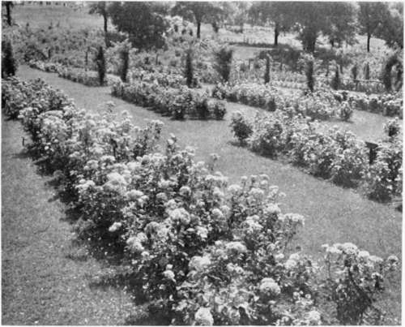

Chapter XXII. A Chapter On Roses
Description
This section is from the book "Landscape Gardening", by Andrew Jackson Downing. Also available from Amazon: Landscape Gardening.
Chapter XXII. A Chapter On Roses
AFRESH bouquet of midsummer roses stands upon the table before us. The morning dew-drops hang heavy as emeralds, upon branch and buds; soft and rich colors delight the eye with their lovely hues, and that rose-odor, which, every one feels, has not lost anything of its divine sweetness since the first day the flower bloomed in that heaven-garden of Eve, fills the air. Yes, the flowers have it; and if we are not fairly forced to say something this month in behalf of roses, then was Dr. Darwin mistaken in his theory of vegetable magnetism.
We believe it was that monster, the Duke of Guise, who always made his escape at the sight of a rose. If there are any "outside barbarians" of this stamp among the readers of our "flowery land," let them glide out while the door is open. They deserve to be drowned in a butt of attar of roses — the insensibles! We can well afford to let them go, indeed; for we feel that we have only to mention the name of a rose, to draw more closely around us the thousands of the fairer and better part of our readers, with whom it is the type of everything fair and lovely on earth.
"Dear flower of heaven and love! thou glorious thing That lookest out the garden nooks among; Rose, that art ever fair and ever young; Was it some angel on invisible wing Hover'd around thy fragrant sleep, to fling His glowing mantle of warm sunset hues O'er thy unfolding petals, wet with dews, Such as the flower-fays to Titania bring? 0 flower of thousand memories and dreams, That take the heart with faintness, while we gaze On the rich depths of thy inwoven maze; From the green banks of Eden's blessed streams I dream'd thee brought, of brighter days to tell Long pass'd, but promised yet with us to dwell".
* Original date of August, 1848.
If there is any proof necessary that the rose has a diviner origin than all other flowers, it is easily found in the unvarying constancy of mankind to it for so many long centuries.
Fig. 38. Public Rose Garden, Minneapolis, Minn.
Fashions there have been innumerable, in ornaments of all sorts, from simple sea-shells, worn by Nubian maidens, to costly diamonds, that heightened the charms of the proudest court beauty - - silver, gold, precious stones — all have their season of favor, and then again sink into comparative neglect; but a simple rose has ever been and will ever be the favorite emblem and adornment of beauty.
"Whatsoe'er of beauty Yearns, and yet reposes, Blush, and bosom, and sweet breath, Took a shape in roses." — Leigh Hunt.
Now the secret of this perpetual and undying charm about the rose, is not to be found in its color — there are bright lilies, and gay tiger-flowers, and dazzling air-plants, far more rich and vivid: it is not alone in fragrance, — for there are violets and jasmines with "more passionate sighs of sweetness;" it is not in foliage, for there arc laurels and magnolias, with leaves of richer and more glossy green. Where, then, does this secret of the world's six thousand years' homage lie?
In its being a type of infinity. Of infinity! says our most innocent maiden reader, who loves roses without caring why, and who does not love infinity, because she does not understand it. Roses, a type of infinity, says our theological reader, who has been in the habit of considering all flowers of the field, aye, and the garden, too, as emblems of the short-lived race of man — "born to trouble as the sparks fly upward." Yes, we have said it, and for the honor of the rose we will prove it, that the secret of the world's devotion to the rose, — of her being the queen of flowers by acclamation always and forever, is that the rose is a type of infinity.
In the first place, then, the rose is a type of infinity, because there is no limit to the variety and beauty of the forms and colors which it assumes. From the wild rose, whose sweet, faint odor is wasted in the depths of the silent wood, or the eglantine, whose wreaths of fresh sweet blossoms embroider even the dusty road sides, "Starring each bush in lanes and glades," to that most perfect, full, rounded, and odorous flower, that swells the heart of the florist as he beholds its richness and symmetry, what an innumerable range of shades, and forms, and colors! And, indeed, with the hundreds and thousands of roses of modern times, we still know little of all the varied shapes which the plant has taken in by-gone days, and which have perished with the thousand other refinements and luxuries of the nations who cultivated and enjoyed them.*
All this variety of form, so far from destroying the admiration of mankind for the rose, actually increases it. This very character of infinity, in its beauty, makes it the symbol and interpreter of the affections of all ranks, classes, and conditions of men. The poet, amid all the perfections of the parterre, still prefers the scent of the woods and the air of freedom about the original blossom, and says —
" Far dearer to me is the wild flower that grows Unseen by the brook where in shadow it flows".
The cabbage-rose, that perfect emblem of healthful rural life, is the pride of the cottager; the China rose, which cheats the window of the crowded city of its gloom, is the joy of the daughter of the humblest day laborer; the delicate and odorous tea rose, fated to be admired and to languish in the drawing-room or the boudoir, wins its place in the affections of those of most cultivated and fastidious tastes; while the moss rose unites the admiration of all classes, coming in as it does with its last added charm, to complete the circle of perfection.
* Many of our readers may not be aware to what perfection the culture of flowers was once carried in Rome. During Caesar's reign, so abundant had forced flowers become in that city, that when the Egyptians, intending to compliment him on his birthday, sent him roses in midwinter, they found their present almost valueless from the profusion of roses in Rome. The following translation of Martial's Latin Ode to Caesar upon this present, will give some idea of the state of floriculture then. There can scarcely be a doubt that there were hundreds of sorts of roses known to, and cultivated by the Romans, now entirely lost.
Continue to: